A simple golf scorecard for iPhone and Apple Watch
Track strokes, putts, and penalties per hole with one tap.
Birdie, Bogey, Eagle and more — see how you stack up every hole.
Front 9, Back 9, or 18 holes — start scoring in seconds, no setup needed.
Set par for any course layout, any hole.
Play just the front or back nine. Holes, par, and score all adjust automatically.
Share a classic scorecard image, with circles for birdies and squares for bogeys.
Lightweight scoring from your wrist. Won't drain your battery.
Add strokes, advance holes, and check your score hands-free.
Score from the Lock Screen and Dynamic Island — no need to unlock your phone.
Set your yardages once and check them mid-round on iPhone or Apple Watch.
Log rounds as a Golf workout, with optional live heart rate and calories on your Watch.
Scoring averages and trends across your rounds, right on the home screen.
Download every round as a spreadsheet. Open it in Numbers or Excel, or hand it to an AI to analyze your game.
Try Pro free — no credit card required. Unlock forever for just ${{ gc.pricing.pro_price }}.
Score hands-free with Siri
No need to take your phone out. Just say it.
Works on iPhone and Apple Watch · Requires active Pro trial or purchase
iPhone Screenshots
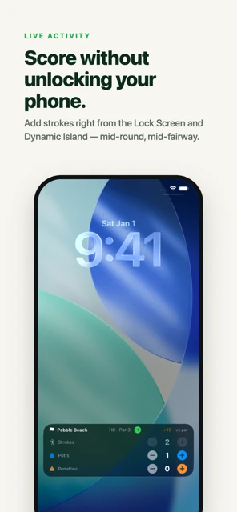
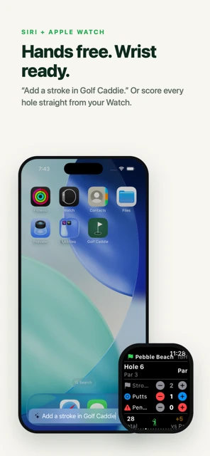
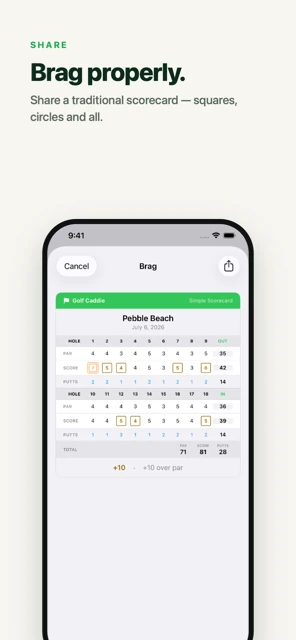
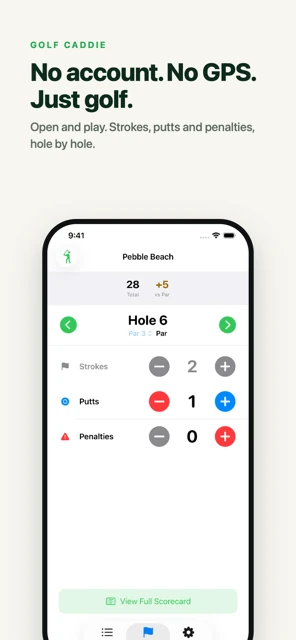
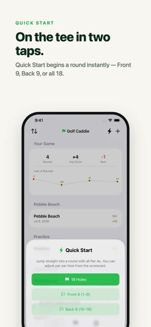
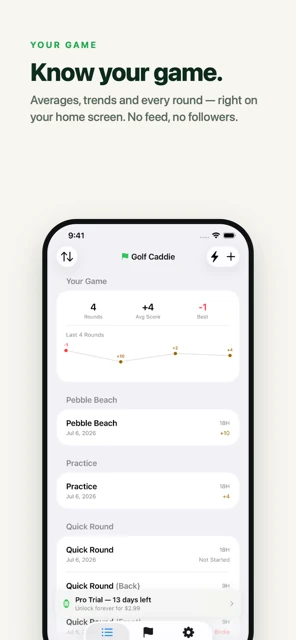
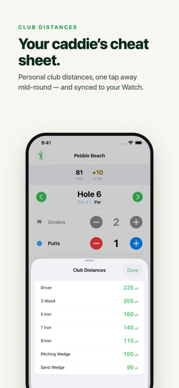
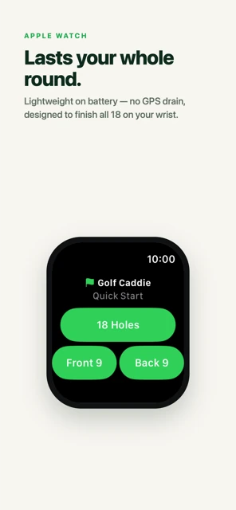
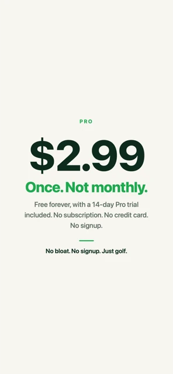
Apple Watch Screenshots
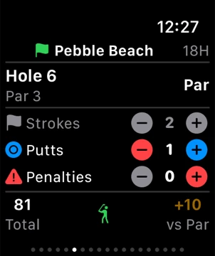
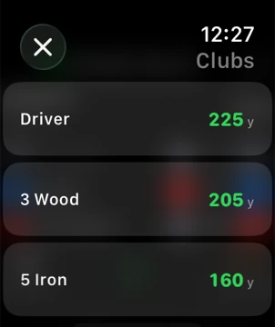
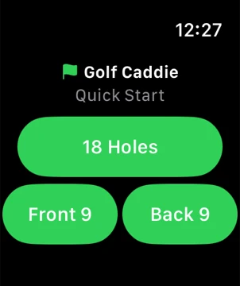
Pricing: free, with a one-time ${{ gc.pricing.pro_price }} Pro unlock
Golf Caddie is free to download with unlimited rounds. Golf Caddie Pro adds the Apple Watch app, Siri, and Live Activity for a one-time ${{ gc.pricing.pro_price }}. Every new user gets a {{ gc.pricing.trial_days }}-day Pro trial with no credit card required. There is no subscription. {{ gc.pricing.trial_note }}
| Feature | Free | Pro (${{ gc.pricing.pro_price }} once) |
|---|---|---|
| {{ f.name }} | {% if f.tier == "free" %}Yes{% else %}{{ gc.pricing.trial_days }}-day trial{% endif %} | Yes |
{{ gc.pricing.price_note }}
Frequently asked questions
Is Golf Caddie free?
Yes. The iPhone scorecard is free with unlimited rounds, including stats, scorecard sharing, CSV export, and club distances. Scoring on Apple Watch, Siri, and the Lock Screen Live Activity are part of Golf Caddie Pro, a one-time ${{ gc.pricing.pro_price }} purchase after a {{ gc.pricing.trial_days }}-day free trial.
Is there a subscription?
No. Pro is a single ${{ gc.pricing.pro_price }} in-app purchase that unlocks forever. The {{ gc.pricing.trial_days }}-day trial doesn't need a credit card. {{ gc.pricing.trial_note }} More in golf scorecard app without a subscription.
Does Golf Caddie need GPS or a signal?
No. Golf Caddie doesn't use GPS or a course database. You enter strokes, putts, and penalties yourself, so it works on any course, even with no signal, and it's light on battery.
Do I need to create an account?
No. There's no sign-up. Your rounds are stored in your own iCloud account, and the developer collects no personal data. See the privacy policy.
Can I keep score on my Apple Watch?
Yes, with Pro. The Watch app scores strokes, putts, and penalties, shows your club distances, and stays in sync with your iPhone and Live Activity as you play. Try it free for {{ gc.pricing.trial_days }} days.
What do I need to use it?
An iPhone running iOS {{ gc.min_ios }} or later. An Apple Watch is optional. Golf Caddie is only available on iPhone and Apple Watch.
Golf scoring guides
-
{%- for g in guides %}
- {{ g.title | escape }}{{ g.description | escape }} {%- endfor %}
How to use Golf Caddie
Quick Start Rounds
- Start a round instantly with all holes set to Par 4.
- Choose Front 9 (holes 1–9), 18 Holes, or Back 9 (holes 10–18).
- Quick Start is available on both iPhone and Apple Watch.
- You can also say "Start a back 9 holes round in Golf Caddie" to Siri.
- Perfect for casual rounds or when you don't want to enter course details.
Starting a Round
- Tap Start Round on the home screen.
- Enter the course name and choose 9 or 18 holes.
- Your round saves automatically as you play.
Managing Rounds
- From the home screen, manage any saved round.
- Sort rounds by date or course name using the menu at the top.
- Swipe right to show the Copy and Rename buttons.
- Swipe left to show the Delete button.
- Copying creates a new round with the same holes and pars — a Back 9 round copies as a Back 9.
- Copying an 18-hole round lets you choose 18 Holes, Front 9, or Back 9.
- Deleting always shows a confirmation first.
Tracking Your Score
- Strokes are full swings before the green.
- Putts are strokes taken on the green.
- Penalties include lost balls, OB, water hazards, etc.
- You can change any score at any time.
Using the Apple Watch
- Swipe left or right to move between holes.
- Tap +/– to update strokes, putts, or penalties.
- Once you add your first putt, strokes lock to prevent mistakes.
- Your watch and phone stay in sync as you play.
How Syncing Works
- Your iPhone, Apple Watch, Live Activity, and Siri all score the same round and update each other automatically.
- Whichever one you used most recently updates the others.
- Changing holes on one moves the others to the same hole.
- If something looks out of sync, opening the iPhone app usually fixes it.
- New rounds may take a moment to appear on the watch.
Editing Previous Holes
- Go back and fix any hole at any time.
- Helpful if you forgot a penalty or mis‑counted.
- The watch may show a small reminder if you're editing an older hole.
Finishing a Round
- A round is complete once all holes have scores.
- Tap End Round on the last hole on iPhone, or on the page after the last hole on Apple Watch. Ending it on one ends it on both and closes the Live Activity.
- You can still make changes after finishing.
- Tap Card View in the summary to see a traditional scorecard layout.
- Tap Share to export a high-res scorecard image — traditional golf marks included.
- Your rounds appear in the history on the home screen.
Troubleshooting
- If the watch doesn't update, open the iPhone app.
- Make sure Bluetooth is turned on.
- Restarting the watch app can help if things get stuck.
- If the watch shows No Active Round, start a round on your iPhone.
- If the iPhone shows No Active Round after you reopen the app mid-round, your scores are safe — tap the round in the Rounds list, or add a stroke on your Watch, to pick it back up.
- If you changed phones or watches, tap Restore Purchase in Settings.
Using Siri
- "Start a quick round" — starts an 18-hole Quick Start round. Say "Start a front 9 holes round" or "Start a back 9 holes round" for nine.
- "Add a stroke" — increments strokes on the current hole.
- "Add a putt" — increments putts on the current hole.
- "Add a penalty" — increments penalties on the current hole.
- "Next hole" — advances to the next hole and syncs to Watch.
- "What hole am I on?" — reports hole number, strokes, and score term.
- "What is my round score?" — reports gross total and over/under par.
- "What is my hole score?" — reports using golf terms (Eagle, Birdie, Bogey, etc.).
- Siri works in the background without opening the app, and updates your scorecard, Watch, and Live Activity right away.
- Requires active Pro trial or purchase.
Purchases & Trial
- Apple Watch, Siri, and Live Activity are part of Golf Caddie Pro.
- On first launch you'll see a welcome sheet — tap Start to begin your free {{ gc.pricing.trial_days }}-day trial, no credit card required.
- If you're not ready, tap Not Now — you can start it anytime from the home screen banner, and you'll be re-offered after a week.
- After the trial, unlock Pro forever for a one-time ${{ gc.pricing.pro_price }}. No subscription, ever.
- Restore purchases anytime from Settings.
Live Activity Pro
- Once a round starts, it appears on your Lock Screen and in the Dynamic Island.
- Tap +/– right there to update strokes, putts, or penalties — no unlock needed.
- Strokes lock once you enter a putt, matching the scorecard rules.
- The next hole button advances your scorecard, Live Activity, and Watch together.
- Every tap is saved and sent to your Watch right away, even with your phone locked.
- Scores and hole changes made on your Watch show up on the Live Activity too.
- The Live Activity closes automatically when the round ends.
Club Distances
- Set up yardages once in Settings — 14 standard clubs are pre-seeded, or add your own.
- Check them mid-round from the scorecard toolbar on iPhone, or the totals row on Apple Watch.
- It's a read-only cheat sheet, so it never gets in the way of scoring.
Apple Health
- Turn it on in Settings on your iPhone — off by default. Your Apple Watch follows the same setting.
- Save Summary writes a Golf workout to Health when your round ends, whether you end it on iPhone or Apple Watch.
- Full Session runs a live Watch workout while your round is active, tracking heart rate, calories, and steps.
- The first time you use Full Session, your Watch asks for permission to save workouts to Health.
Your Game Stats
- The Rounds tab shows your scoring averages and trends over time.
- Updates automatically as you finish more rounds — no setup needed.
Exporting Your Rounds
- Go to Settings → Your Data → Export Rounds (CSV) and choose where to send it — Files, Mail, AirDrop, or another app.
- The spreadsheet has one row per hole: date, start and end time, course, Front 9 / Back 9 / 18 Holes, par, strokes, putts, penalties, and score vs par.
- Open it in Numbers, Excel, or Google Sheets, or give it to an AI assistant and ask how to improve your game.
- Free for everyone — no Pro needed. The file only goes where you send it.
Have a question, found a bug, or want to suggest something?
Contact SupportStart scoring your next round
Free on the App Store. Try Pro free for {{ gc.pricing.trial_days }} days, then keep it for a one-time ${{ gc.pricing.pro_price }}.
Download on the App Store